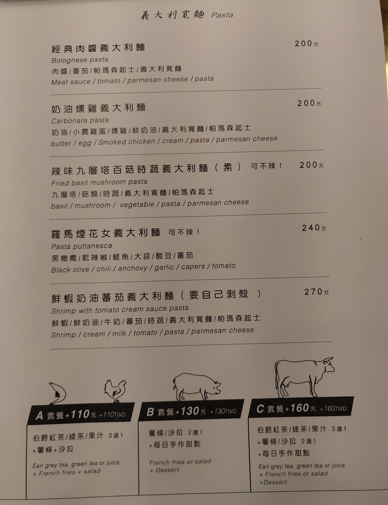
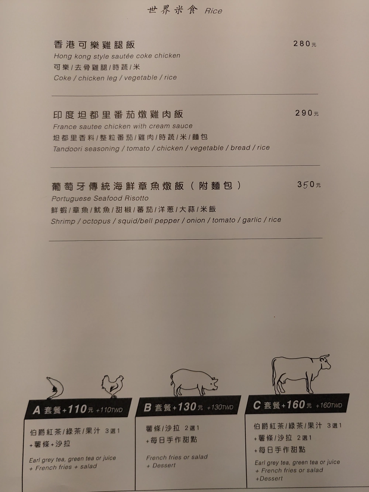

[竹北] A Kitchen 一間廚房
| 餐廳名稱: | A Kitchen 一間廚房 |
|---|---|
| 地 址: | 新竹縣竹北市嘉豐十一路二段二號 |
| 營業時間: | 週一至週五 11:30 - 14:00 17:00 - 21:00 |
| 週六至週日 11:30 - 15:00 17:00 - 20:30 | |
| 電話 : | 03 657 6538 |
這間餐廳比較接近竹北高鐵，但又有小一段距離。有義大利麵，也有美式炸物、高級三明治、甜點等，手藝感覺不錯，Google 分數蠻高分的。 但這附近似乎行人不多，過路客比較少。從FB粉絲頁感覺主廚似乎除了午晚餐之外，努力想往各公司行號的下午茶、Party、外燴 這個方向發展， 設計了蠻多下午茶的菜單在推銷。知道這間餐廳的時候，假日9點開門的早午餐時段已經取消了，真可惜，但是早午餐餐點還在菜單上。
某個假日的晚上，就跑來嚐鮮了。 A Kitchen 一間廚房 的 大門口。
店內乾乾淨淨，很清爽。
一側有可愛的抱枕。
店內的一個角落，自助的水、餐具等。
點餐櫃檯。
點餐櫃檯旁邊的甜點、鹹派、三明治 保溫櫃。
以下是我們家去用餐時，內用的餐單。但主廚一直在加強 Party 菜單，應該有變動。  
因為三個人今天也不是很餓，最後選了 奶油燻雞義大利麵加A套餐，與 鮮蝦奶油番茄燉飯加B套餐。
A套餐 的 沙拉，還不錯，中規中矩。
A套餐 的 柳橙汁，很正常。
奶油燻雞義大利麵 與 A套餐 的 薯條。 我最愛的白醬，這道菜很難失敗，當然是很好吃。
鮮蝦奶油番茄燉飯。B套餐的薯條就沒照了。應該也算好吃啦，只是個人不是那麼愛紅醬，至少也是中規中矩。 紅醬我比較偏好 肉醬麵，但今天賣完了，所以改點這道。
B套餐 的 甜點，甜點很優秀。香草冰淇淋大概是現成的吧，很正常、很好吃。蘋果派 應該就是主廚手藝了，甜度很好、硬度適中，甜點做得不錯。
這家 A Kitchen 一間廚房，廚藝水準不錯，服務親切，大家可以多多支持。 下午茶雖然我還沒吃過，看那照片蠻誘人的，如果有公司要訂下午茶或開個小型 Party，A Kitchen 應該也是個好選擇。 我會再回訪。